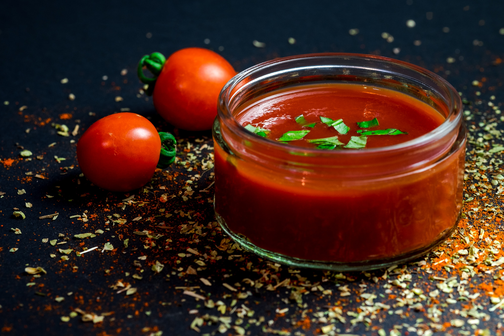

The five mother sauces include béchamel sauce, veloute sauce, brown or Espagnole sauce, Hollandaise sauce and tomato sauce.
The fifth mother sauce is the classic Tomate sauce. This sauce resembles the traditional tomato sauce that we might use on pasta and pizza, but it's got much more flavor and requires a few more steps to make. First, we render salt pork and then sauté aromatic vegetables. 
Then we add tomatoes, stock, and a ham bone, and simmer it in the oven for a couple of hours. Cooking the sauce in the oven helps heat it evenly and without scorching. Traditionally, the tomate sauce was thickened with roux, and some chefs still prepare it this way. But the tomatoes themselves are enough to thicken the sauce.